9:41
O treino de hoje, 3 min
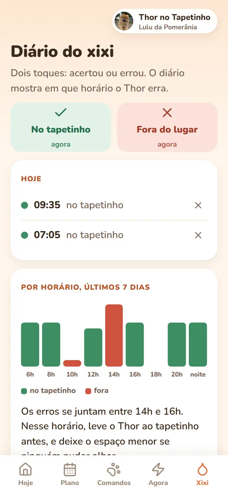
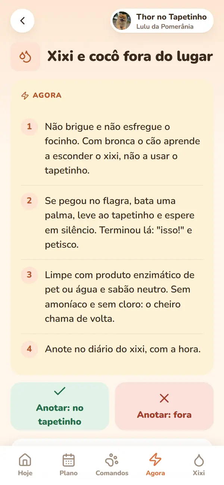
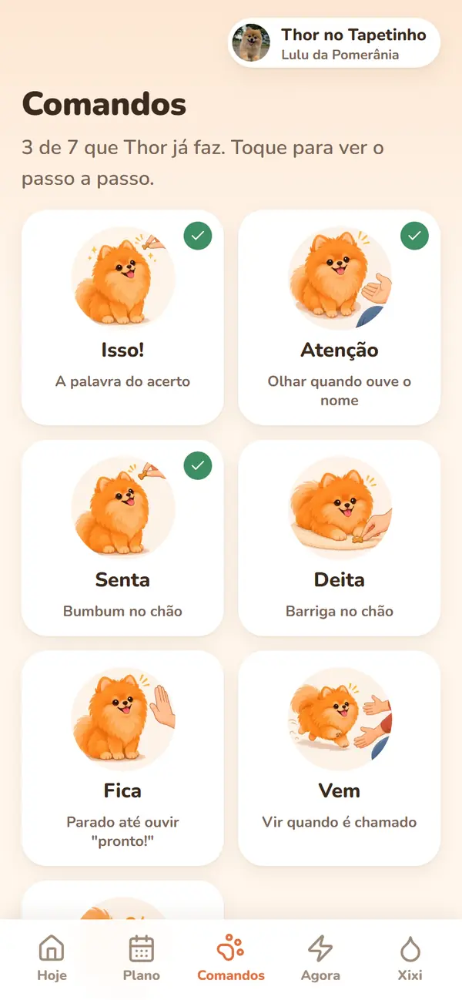
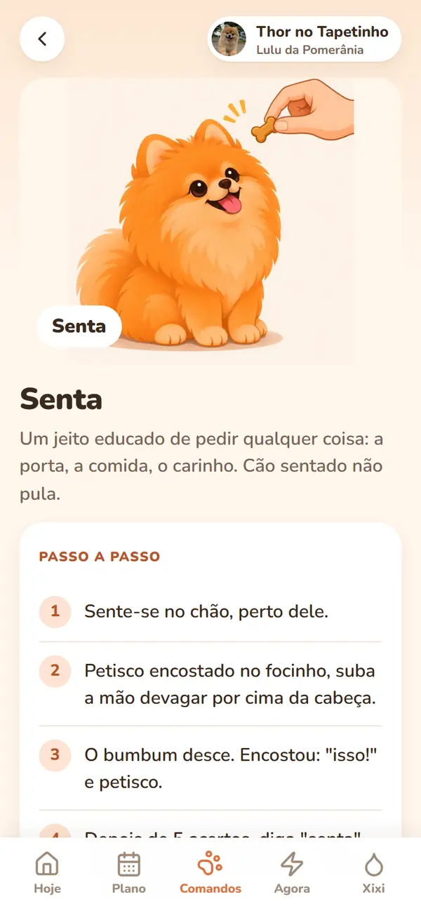
Latiu? Um toque e pronto
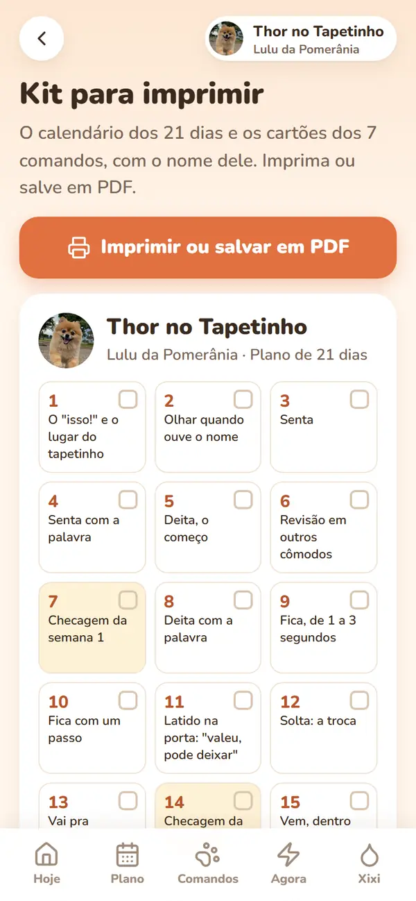
Para quem tem Lulu da Pomerânia
Senta, fica, vem e xixi no tapetinho: 3 minutos por dia, com o passo a passo no celular.





R$ 37 uma vez só · Pix ou cartão · no seu celular
Faz do lado, rasga o tapetinho, acerta de noite e erra de dia.

Arraste para o lado e veja cada tela, do jeito que fica no seu celular.
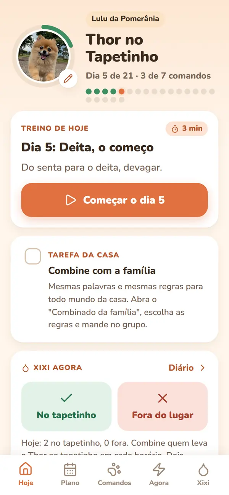
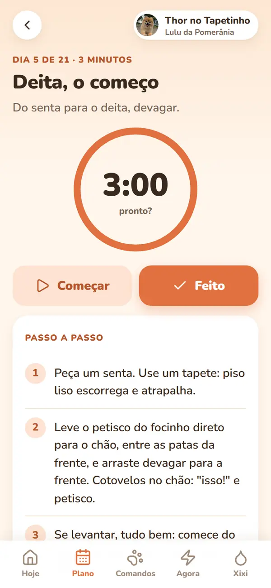
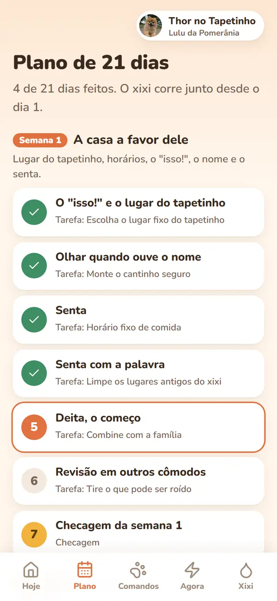
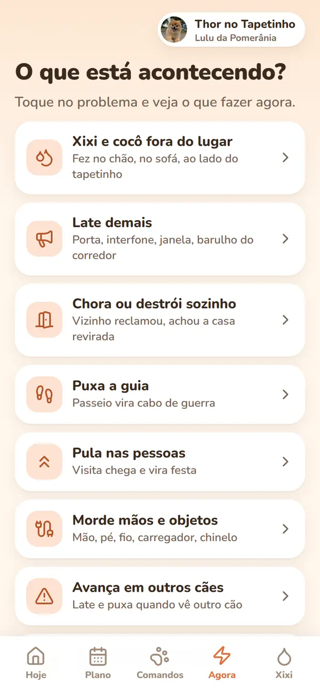
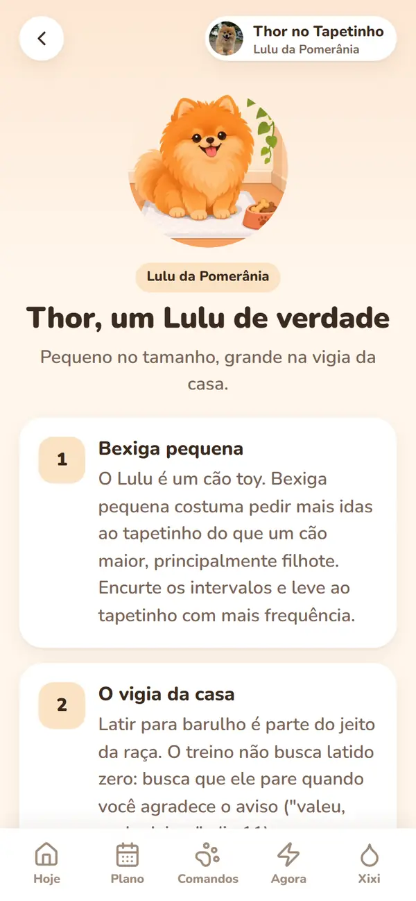
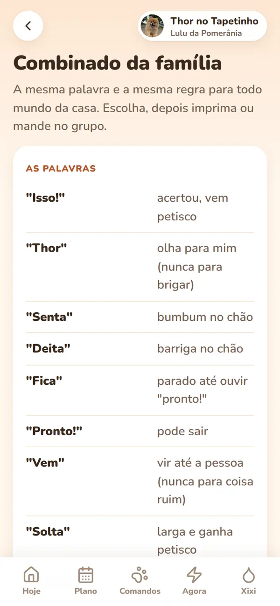
Cachorro repete o que deu certo. Bronca depois do xixi só ensina a esconder.
Por isso o app premia o acerto na hora e arruma a casa para ele não errar.
São 21 dias, um passo por dia. Roteiro de treino, não promessa: não deu certo, repita o dia.
A tela de hoje lembra quando levar ao tapetinho. Fez lá: "isso!" e petisco.
Fez fora: dois toques no diário. Ele mostra o horário em que o Thor mais erra.

Xixi toda hora e pouco de cada vez? O app manda primeiro ao veterinário.
R$ 37 uma vez só
O treino leva em conta o corpo e o jeito do Lulu. Os 7 comandos vêm desenhados com ele.


Orientação geral da raça, não avaliação de saúde.
Latido, choro sozinho, mordida, guia, visitas: o que fazer já e quando buscar ajuda.

Mensagens que recebemos de quem já usa o app.
Gente meu lulu latia pra absolutamente tudo kkkk comecei a fazer os treininhos e já tô conseguindo controlar melhor isso. Ainda tem seus momentos de escândalo mas melhorou bastante 😂
Eu achava que ele era teimoso mesmo e não tinha jeito. O que mais gostei foi que explica tudo bem simples, sem precisar ficar horas treinando. Faço um pouquinho todo dia.
Comprei meio desconfiada, mas gostei bastante. Aqui em casa o maior problema era ele não obedecer quando chamava. Não tá 100% ainda, mas já vem muito mais vezes.
Preço de lançamento
de preço cheio R$ 69,90 por R$ 37
Sem mensalidade. Pix ou cartão.
O acesso chega no e-mail quando o pagamento confirma.

Não serviu? Você tem 7 dias para pedir o reembolso pela Cakto.
Sim, o plano começa do zero. Para os 90 primeiros dias, há um adicional opcional no pagamento.
Sim. O treino é na sala, com o tapetinho. A rua só entra na semana 3.
Os 21 dias são o roteiro do treino, não prazo de resultado. Cada cão tem o seu ritmo.
Não, R$ 37 uma vez só. No pagamento aparecem adicionais opcionais; só entram se você marcar.
Não. O app abre pelo link do e-mail, no navegador do celular.
Para mordida de brincadeira, sim. Se morde pessoas ou pode machucar, procure um profissional de comportamento.
Não. É material educativo, e o app avisa quando é caso de veterinário.
Comece hoje pelo dia 1: o "isso!" e o lugar do tapetinho.
R$ 37 uma vez só